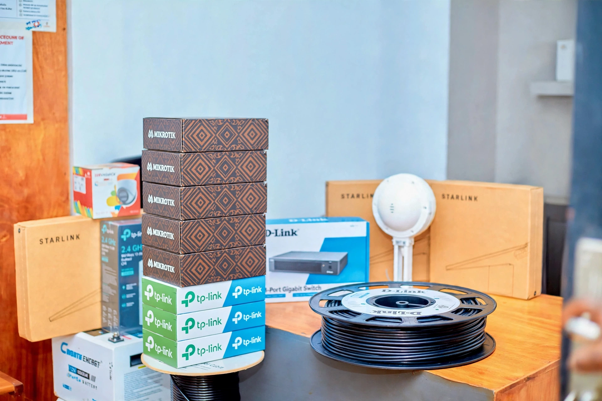
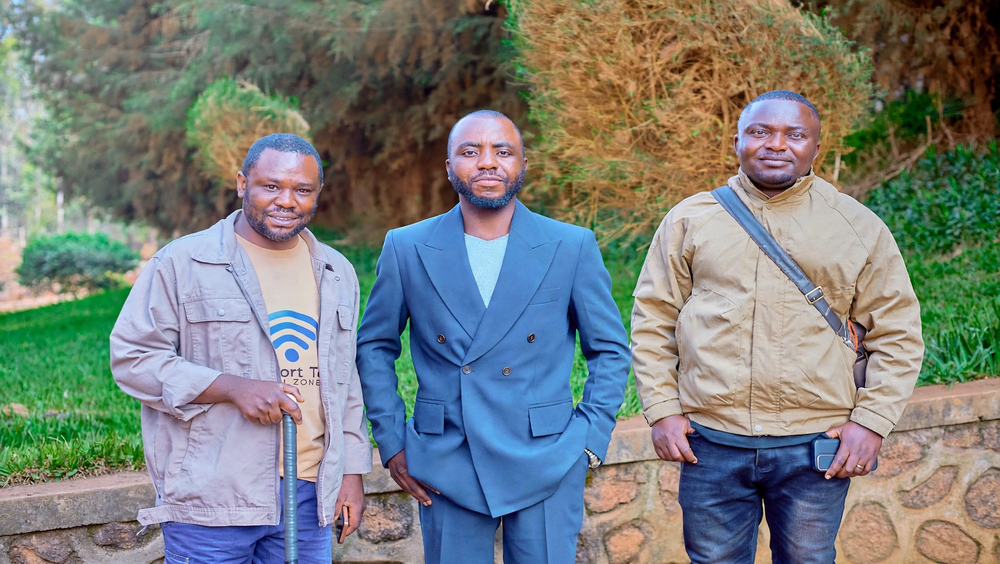

Notre mission
Faciliter l’accès à Internet et proposer des solutions réseau adaptées aux besoins des particuliers, des entreprises et des institutions.
COMFORT TECHNOLOGIES COTEC
Chargement…
Internet haut débit par satellite
CONNECTIVITÉ · RÉSEAUX · ÉNERGIE
Internet haut débit et installations fiables, pensés pour les maisons, commerces et entreprises de Butembo et du Nord-Kivu.
ÉQUIPEMENTS DE CONFIANCE
Nous vous aidons à trouver la solution adaptée à votre site.
NOS ENGAGEMENTS
Une équipe de proximité, au service du Nord-Kivu.
À PROPOS DE COMFORT TECHNOLOGIES COTEC
Fondée en 2022 par Nzanzu Katsuva Bienfait, Kambale Syavuvirira Joppy et Kambale Wasingya Thomas, COMFORT TECHNOLOGIES COTEC est une entreprise locale de technologie et de connectivité basée à Butembo, dans le Nord-Kivu. Nous accompagnons particuliers, entreprises et institutions avec des solutions fiables en accès Internet, installation réseau, maintenance et dépannage. Notre mission est simple : mettre la technologie au service de chacun, avec un accompagnement professionnel et des services pensés pour des connexions durables.
Votre partenaire en connectivité et solutions technologiques.↗Faciliter l’accès à Internet et proposer des solutions réseau adaptées aux besoins des particuliers, des entreprises et des institutions.

Installation, configuration, maintenance et dépannage des équipements réseau, solutions Wi-Fi et systèmes de connectivité.

Accompagner nos clients avec sérieux, écoute et assistance technique afin de répondre à leurs besoins de connexion.
NOS SERVICES
De l’accès à Internet à l’installation des équipements réseau, COTEC vous accompagne avec des solutions adaptées à vos besoins, à la maison comme en entreprise.
Des solutions de connexion Internet pour les particuliers, les entreprises et les institutions, selon la couverture disponible dans votre zone.
↗Fourniture, installation et configuration des équipements Starlink pour accéder à Internet dans les zones adaptées à cette technologie.
↗Installation et configuration d’antennes LiteBeam, NanoStation, Cambium et de points d’accès pour établir ou étendre une couverture réseau.
↗Fourniture et configuration d’équipements réseau, notamment des routeurs TP-Link, Tenda, WavLink et MikroTik, selon les besoins de votre installation.
↗Installation et configuration de systèmes de vidéosurveillance pour contribuer à la surveillance de vos espaces résidentiels et professionnels.
↗Diagnostic, dépannage et maintenance des équipements réseau afin de contribuer au bon fonctionnement et à la fiabilité de votre installation.
↗CONNECTIVITÉ POINT À POINT
Reliez vos bâtiments, bureaux ou installations grâce à nos solutions de liaison sans fil point à point. Nous étudions la distance, les obstacles et vos besoins afin de vous proposer une installation adaptée.
Découvrir nos solutions point à point↗
NOTRE EXPERTISE
Chaque projet mérite une solution adaptée. Nous vous accompagnons de l’analyse de vos besoins à l’installation de vos équipements, avec une attention particulière portée à la performance, à la stabilité et à la qualité de votre connexion.
Comprendre vos besoins et identifier la solution adaptée à votre environnement.
Déployer et configurer vos équipements pour une connexion performante.
Vous accompagner pour maintenir votre réseau fiable et fonctionnel.